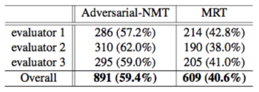

Adversarial Neural Machine Translation
Updated:
Wu et al.[1] managed to apply Generative Adversarial Networks(GAN) on NMT, despite the difficulty of progagating information from the discriminator to the generator through the discretely generated natural language tokens.
Motivation
They thinks Maximum Likelihood Estimation (MLE) does not guarantee natural translation results. Not even by adding sequence level objectives (e.g. directly maximizing BLEU). By adopting GAN, they believe the NMT model can generate more natural sentence since the NMT generator model is trained to fool the discriminator model.
Architecture
Since it is a GAN, there are a generator which could be any NMT model and a discriminator which is a CNN in their work. The generator learns to generate correct and natural translation results so that the discriminator can not tell which is generated by the generator. And the discriminator learns to not be fooled by the generator. The framework is as in Figure 1.
Figure 1:
Adversary Model
a CNN is used as the adversary model to capture the hierarchical correspondence of $(x,y)$ at differenct abstraction levels. Given a sentence pair $(x,y)$ where $x_{i},y_{j}$ are embedding vectors, feature map is constructed as
$$
z^{0}_{i,j} = [x^T_{i},y^T_{j}]^T
$$
Then feature map is put through convolutional and max-pooling layers. The ativation function here is sigmoid (why not more widely used ReLU). At last layer, there is a MLP to ouput the probability that $(x,y)$ is from ground-truth data. The framework is shown in Figure 2. (not sure how they deal with the various sequence lengths)
Figure 2:
Propagate Signals to NMT Model
With the notations for NMT model G and adversary model D, the final training objective is:
$$
\underset{G} \min \underset{D} \max V(D,G) = E_{(x,y) \sim P_{data}(x,y)} [ \log D(x,y)] +
E_{x \sim P_{data}(x), y^\prime \sim G(\cdot|x)} [ \log (1-D(x,y^\prime))]
$$
It is easy to train the adversary model D. However, the discretely sampled $y^\prime$ from G makes it difficult to directly back-propagate the error signals from D to G. Because the gradient of argmax degenerates. To explain this, let us consider the gradient of $argmax(x_1,x_2)$ w.r.t. $x_1$. When $x_1 < x_2 $, $argmax(x_1,x_2)=1$. the gradient w.r.t. $x_1$ is 0. When $x_1 > x_2 $, $argmax(x_1,x_2)=0$. the gradient w.r.t. $x_1$ is still 0. They came up with REINFORCE algorithm, a Monte-Carlo policy gradient method in reinforcement learning literature to optimize G. Note that the objective of training G under a fixed source language sentence x and D is to minimize the following loss:
$$
L = E_{y^\prime \sim G(\cdot|x)} [ \log (1-D(x,y^\prime))]
$$
whose gradient w.r.t. $\Theta_{G}$ is
$$
\bigtriangledown _{\Theta_{G}} L = E_{y^\prime \sim G(\cdot|x)} [ \log (1-D(x,y^\prime)) \bigtriangledown _{\Theta_{G}} \log G(x,y^\prime)]
$$
A sample $y^\prime$ from $G(\cdot|x)$ is used to approximate above gradient
$$
\bigtriangledown _{\Theta_{G}} \approx \hat{\bigtriangledown} _{\Theta_{G}} \log (1-D(x,y^\prime)) \bigtriangledown _{\Theta_{G}} \log G(x,y^\prime)
$$
From the view of reinforcement learning, $G(\cdot|x)$ is the conditional policy faced with x. And $ - \log (1-D(x,y^\prime))$ term provided by D acts as a Monte-Carlo estimation of the reward. Using only one sample brings high varience. To reduce it, a moving average of the historical reward values is set as a reward baseline.
Experiments
Pretrain G and D and then train G and D jointly.
Settings
En->Fr G Model
- WMT 2014 training corpus as training set(12M pairs), the combination of news-test 2012 and news-test 2013 as dev set(6K pairs) and news-test 2014 as test set(3K pairs).
- Maximal sentence length is 50.
- Use top 30k most frequent English and French words.
- Embedding size is 620.
- hidden state size is 1000.
- Batch size 80.
- Gradient clipping is 1.
- Initial learning rate is 0.02 and halves it every 80k iterations.
De->En G Model
- IWSLT 2014 evaluation campaign consisting of training(153k)/dev(7k)/test(6.5k) corpus.
- Maximal sentence length is 50.
- Use 22,822 most frequent English and 32,009 German words.
- Embedding size is 256.
- Hidden state size is 256.
- Batch size 32.
- Gradient clipping is 10.
- Initial learning rate is 0.001 and halves it every 80k iterations.
adversary D Model
- 2 conv3x3 + pool2x2 layers with 20 feature maps.
- 1 MPL with 20 hidden layer size.
Joint Training
- Fix embedding.
- Batch size is set as 32.
- Beam size is 4.
- Nesterov SGD.
- Force 50% randomly chosen mini-batch data are trained with Adversarial-NMT, while apply MLE principle to the other mini-batches. This significantly improves stability. It also reported in other tasks.
Results
They compared perforances among some well acknowledged NMT systems. Those systems leverage
- Using large vocabulary to handle rare words (Jean et al., 2015; Luong et al., 2015).
- Minimum Risk Training (MRT) to directly optimize evaluation measure (Shen et al., 2016).
- Dual learning to enhance both primal and dual tasks (He et al., 2016).
- Postprocessing UNK (Luong et al., 2015; Jean et al., 2015).
- Use monolingual training data with an automatic back-translation (Sennrich et al., 2016).
Table 1: Different NMT systems’ performances on En->Fr translation
Table 2: Different NMT systems’ performances on De->En translation
Table 3: Human evaluations on En->Fr ( 286 (57.2%) means that evaluator 1 made a decision that 286 (57.2%) out of 500 translations generated by Adversarial-NMT were better than MRT)

Impact of Learning Rates
From Figure 3, we could see Adversarial-NMT is much more robust with regard to the pace of D making progress than that of G. Wu et al. conclude that G is relatively weak and needs carefully configurations of learning rate.
Figure 3: En->Fr Dev set BLEUs during training process with diffrent learning rate.
References
[1] Wu et al. Adversarial Neural Machine Translation. arXiv 2017